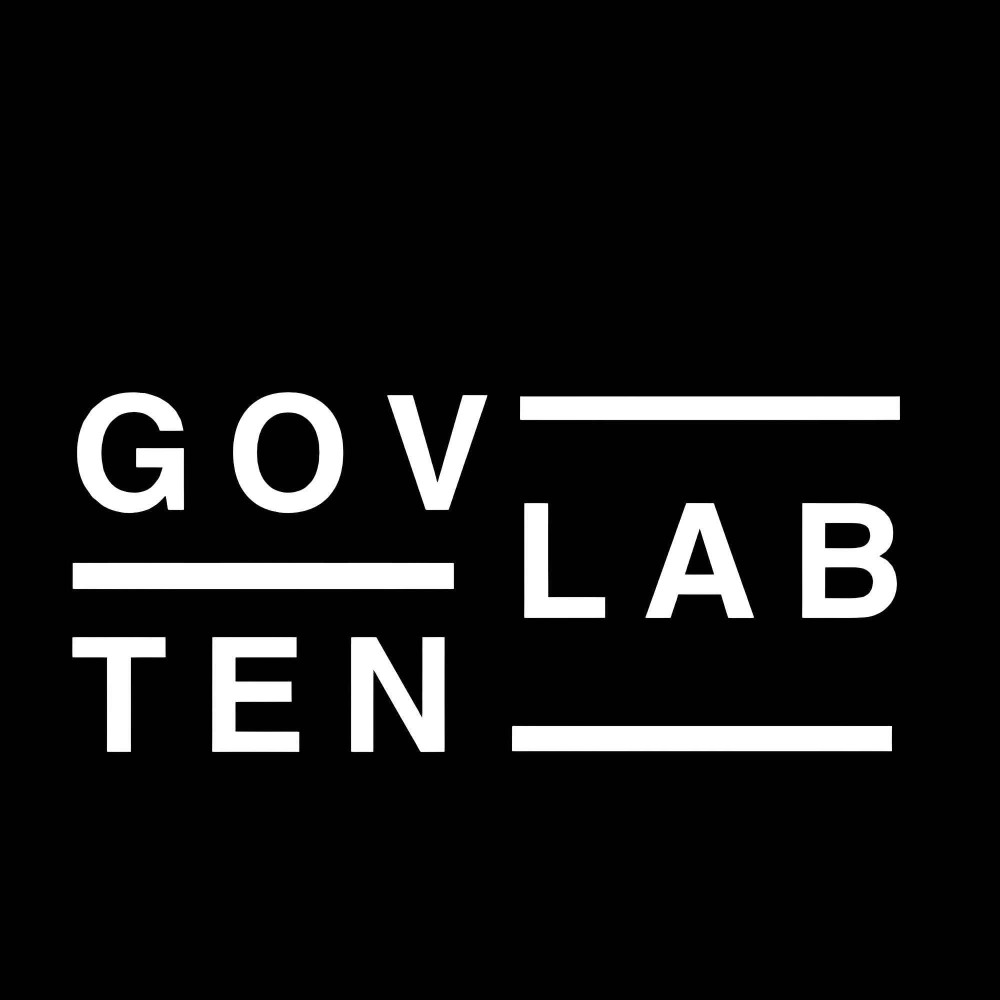

GovTech Hackathon
{Boost the Public Sector}
The Hackathon on October 11 & 12, 2025 in Saarland
0
D
:
00
H
:
00
M
:
00
S
In the heart of Europe, where Germany, France and Luxembourg meet, we are shaping the future of the public sector. Saarland as an innovative technology location and bridge between cultures offers the perfect setting for our GovTech Hackathon - an intensive creative and programming marathon where visionary minds from various disciplines develop groundbreaking solutions for tomorrow's digital administration in just 48 hours.
Event Details
# Mark your calendar: The GovTech event of the year!
It starts on October 11, 2025: In just 48 hours, we will develop new solutions together for pressing challenges in the public sector. Be there when creativity and technology meet - and help shape tomorrow's future.
Venue
LOCATION
East Side Fab e.V.
ADDRESS
Eschberger Weg 40
66121 Saarbrücken
66121 Saarbrücken
COORDINATES
49.2354° N, 7.0085° E
Challenges
Loading topics...
Be Part of the Change
Secure your spot now and help shape the future of the public sector
A Collaborative Event by
